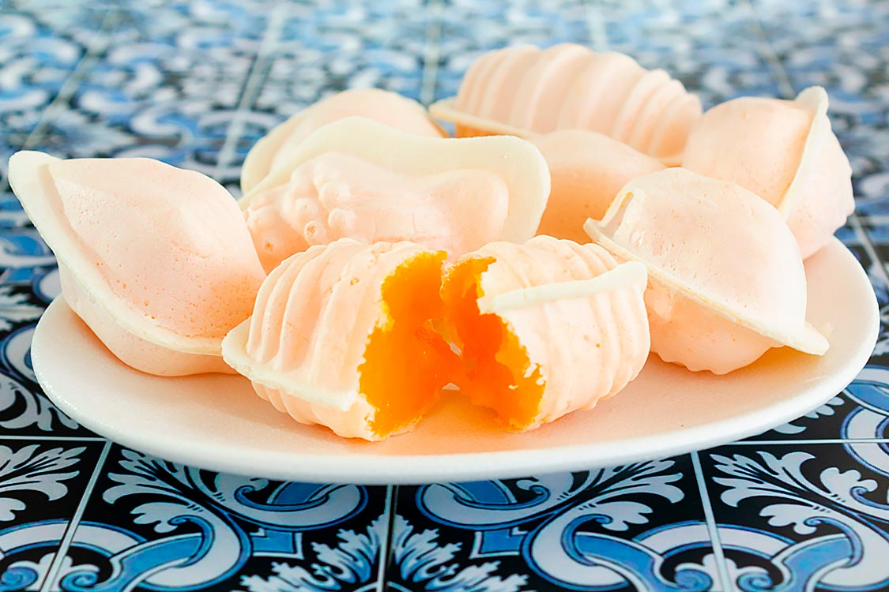

Os ovos moles são o doce mais famoso de Aveiro.
Nasceram nos conventos da cidade: diz-se que as freiras usavam as claras dos ovos para engomar a roupa e aproveitavam as gemas para fazer doces.

uma barrica de madeira pintada com flores, cheia de ovos moles]
1 - Gemas de ovo
2 - O açucar
O creme é metido dentro de uma hóstia em forma de concha, peixe ou búzio, ou vendido em pequenas barricas de madeira pintadas à mão.
Os ovos moles de Aveiro têm IGP (Indicação Geográfica Protegida).
Isto quer dizer que só se podem chamar assim se forem feitos na região de Aveiro, seguindo a receita tradicional.
O que dizem os doceiros.